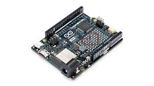
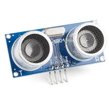
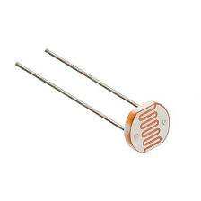
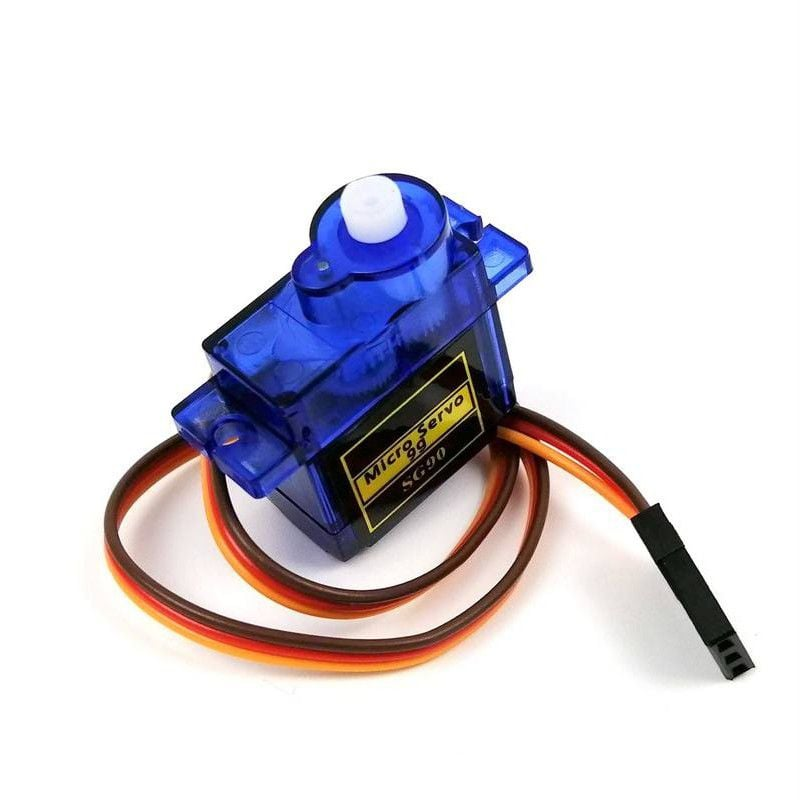

🖼️ ภาพรวมชิ้นงาน (Project Showcase)
🚀 ฟังก์ชันการทำงานหลัก (Function)
🚪 ประตูอัตโนมัติ
ระบบจะใช้เซ็นเซอร์ตรวจจับระยะห่างของคนกับประตู เมื่อเข้ามาใกล้ประตูจะเปิดและปิดอัตโนมัติ
*หมายเหตุ: สามารถปรับเป็นโหมด Manual ได้ที่หน้า Website
🖥️ จอแสดงผล LCD
จอ LCD ที่อยู่ด้านข้างของประตู จะแสดงรายละเอียดสถานะของประตูว่าปิดหรือเปิด
💡 ระบบไฟส่องสว่างอัตโนมัติ
เมื่อแสงสว่างภายในบ้านน้อยลงถึงจุดที่กำหนด ไฟก็จะเปิดอัตโนมัติ
*หมายเหตุ: สามารถปรับเป็นโหมด Manual ได้ที่หน้า Website
🚀 ฟังก์ชันการทำงานหลัก (Function)
🚪 ประตูอัตโนมัติ
ระบบจะใช้เซ็นเซอร์ตรวจจับระยะห่างของคนกับประตู เมื่อเข้ามาใกล้ประตูจะเปิดและปิดอัตโนมัติ
*หมายเหตุ: สามารถปรับเป็นโหมด Manual ได้ที่หน้า Website
🖥️ จอแสดงผล LCD
จอ LCD ที่อยู่ด้านข้างของประตู จะแสดงรายละเอียดสถานะของประตูว่าปิดหรือเปิด
💡 ระบบไฟส่องสว่างอัตโนมัติ
เมื่อแสงสว่างภายในบ้านน้อยลงถึงจุดที่กำหนด ไฟก็จะเปิดอัตโนมัติ
*หมายเหตุ: สามารถปรับเป็นโหมด Manual ได้ที่หน้า Website
⚙️ หลักการทำงานและอุปกรณ์ (Working Principle & Components)
-

🧠 Arduino Uno R4 WiFi
ทำหน้าที่เป็นสมองกลหลัก
-

🔊 Ultrasonic Sensor
ทำหน้าที่รับข้อมูล (ตรวจจับระยะห่าง)
-

☀️ LDR Sensor
ทำหน้าที่ตรวจจับความสว่าง
-

🔄 Micro Servo Motor
ทำหน้าที่หมุนเพื่อเปิดและปิดประตู